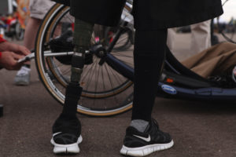

Assistive technology (AT) is used to support people in a variety of situations. It can be divided into two main categories, physical supports and sensory and cognitive supports.
Types of assistive technology
Select the tabs below to learn more about the two categories of AT.
Physical supports include mobility aids such as ‘high-tech’ wheelchairs (motorised to mount steps, avoid obstacles), walking frames and canes (with collision avoidance) and user-driven lifting hoists.
Prosthetics used to replace lost or diminished physical functionality (e.g. artificial limbs) are improving, thanks to microprocessors, refined electro-mechanics, wide spectrum sensors and the incorporation of tactile (haptic) feedback. Customisation is also allowing support users to personalise their prosthetics.
Sensory and cognitive mobility aids help people navigate their surroundings.
Sensory mobility focuses on increasing or replacing vision or hearing. A dog and cane is one traditional example. A more high tech example is audible traffic lights.
Cognitive mobility aids help people with a cognitive impairment. For example, vibrating pill boxes can help people remember when they need to take their medication. GPS devices can be used to help people find their way home.
One area that AT needs to improve in is its ability to assist with multiple capabilities at once. For example, most sensory support devices can only assist users with avoidance of obstacles or navigation, but not both.